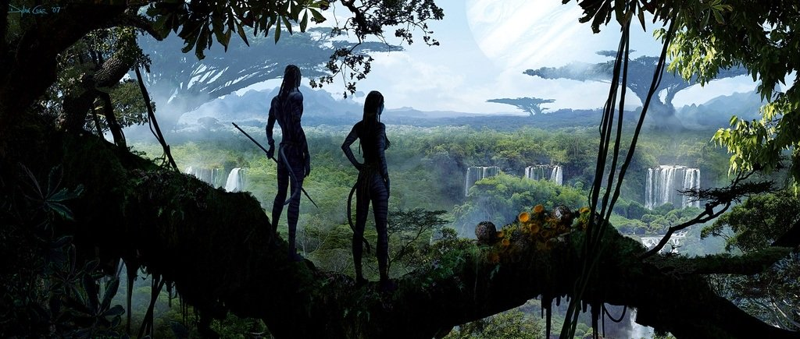
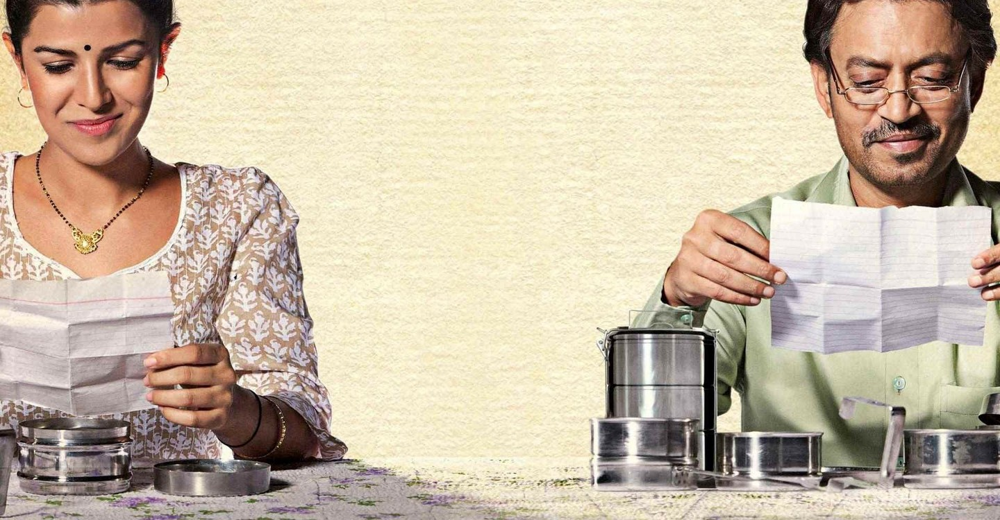
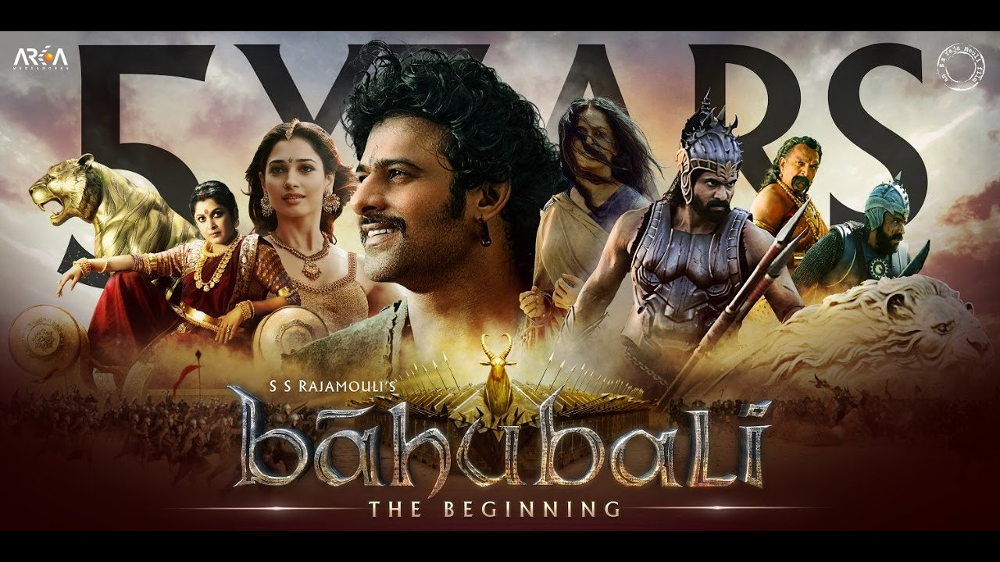
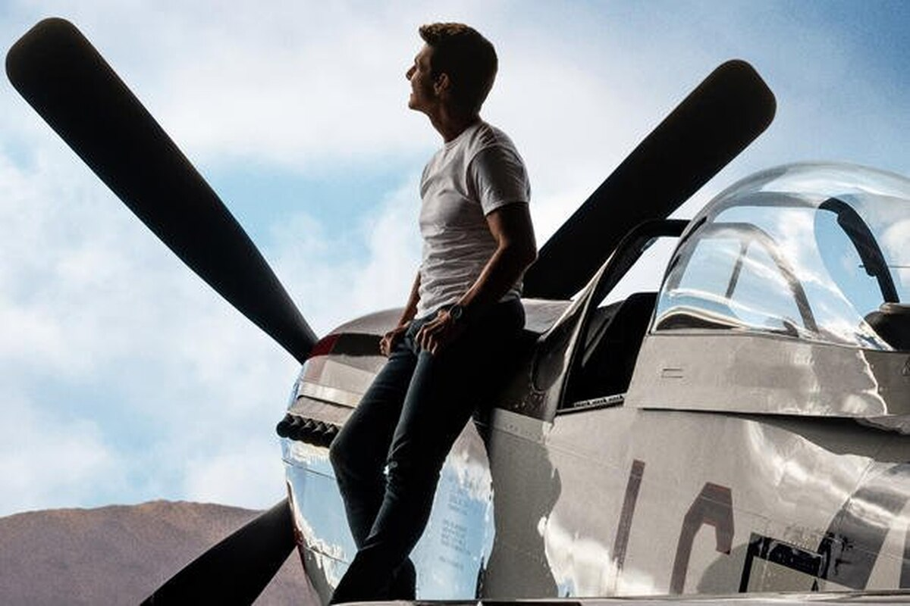
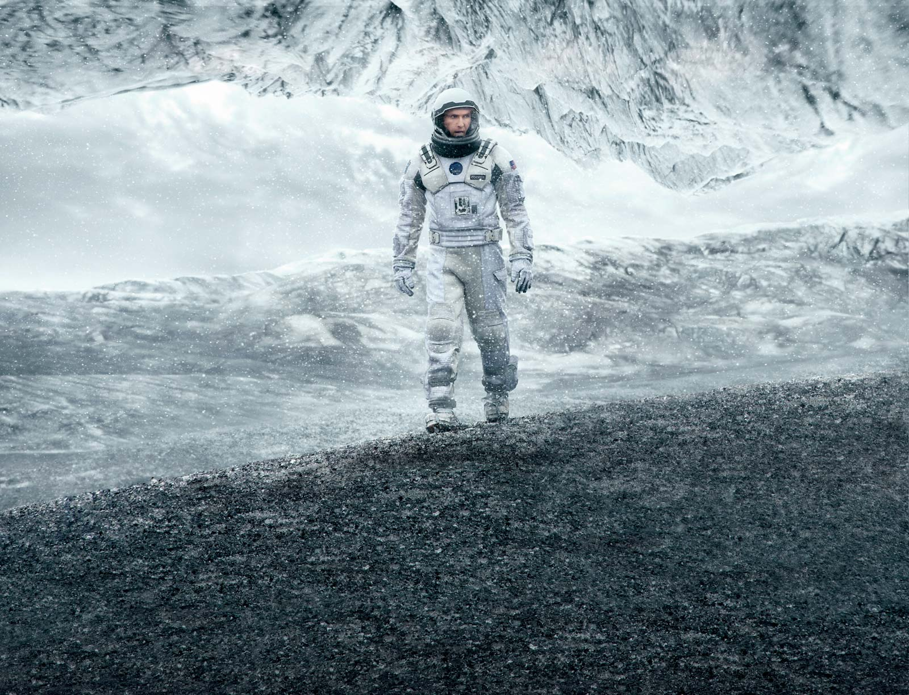
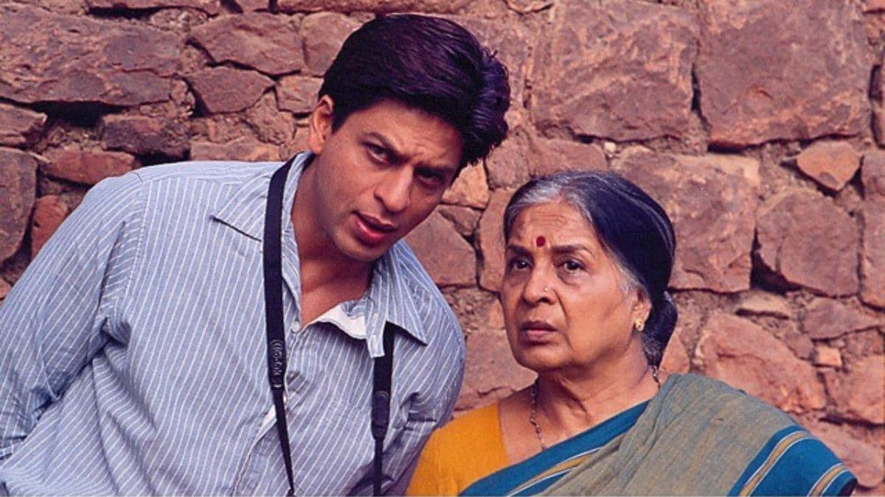

Avatar
Avatar is one of the most visually beautiful movies ever made. Even people who complain about special effects in movies dropped their jaws upon seeing it for the first time. This film pushed modern cinematic technology into a new age, ushering in the age of stereoscopic 3D. Beneath its beauty, the film features a cross-species love story and a social message. Avatar is a must see for any movie fan.
Best Quote: Jake Sully (Sam Worthington) “I became a Marine for the hardship. Told myself that I can pass any test a man can pass. All I ever wanted was a single thing worth fighting for.”
Lunchbox
The film, set in Mumbai, revolves around a mistaken delivery by the Dabbawalas (lunchbox service) of Mumbai, which leads to a relationship between Saajan, a lonely widower close to retirement, and Ila, an unhappy housewife, as they start exchanging notes through the daily lunchbox.
Best Quote:"You are young. You can dream. And for some time you let me into your dreams. And I want to thank you for that."
Avenger

Avengers: Endgame is a 2019 American superhero film based on the Marvel Comics superhero team the Avengers, produced by Marvel Studios and distributed by Walt Disney Studios Motion Pictures. ... The film serves as a conclusion to the story of the MCU up to that point, ending the story arcs for several main characters.
Best Quote: "This Is The Fight Of Our Lives. We Are Going To Win. Whatever It Takes."
Bahubali
Bahubali will be the first Indian film that will transcend regional boundaries and made in Telugu, Tamil and dubbed in Hindi, Malayalam, English, French and Japanese. Over 15,000 sketches were used over a span of 1 year to be used for the scenes shot for the film, During the pre-production stages.
Best Quote:"A good king is always prepared to attack, but a great king is always prepared to defend."
In battle, you are your best weapon.
Top Gun
He and his Radar Intercept Officer, Nick "Goose" Bradshaw (Edwards) are given the chance to train at the US Navy's Fighter Weapons School at Naval Air Station Miramar in San Diego, California.The film stars Tom Cruise, Kelly McGillis, Val Kilmer, Anthony Edwards, and Tom Skerritt. Cruise plays Lieutenant Pete "Maverick" Mitchell, a young naval aviator aboard the aircraft carrier USS Enterprise. He and his Radar Intercept Officer, Nick "Goose" Bradshaw (Edwards) are given the chance to train at the US Navy's Fighter Weapons School at Naval Air Station Miramar in San Diego, California.
Best Quote:"Maverick, spotting Charlie for the first time: "She's lost that loving feeling.""
Parasite

Greed and class discrimination threaten the newly formed symbiotic relationship between the wealthy Park family and the destitute Kim clan.
Parasite tells the story of a poverty-stricken family, the Kims, who cunningly place themselves in the service of the Parks, an obscenely wealthy household who have been unknowingly harboring a stranger in their basement for years
Best Quote: Ki-taek : They are rich but still nice. Chung-sook, Ki-taek's wife : They are nice because they are rich.
Inception

Inception is a 2010 science fiction action film written and directed by Christopher Nolan, who also produced the film with his wife, Emma Thomas. The film stars Leonardo DiCaprio as a professional thief who steals information by infiltrating the subconscious of his targets. After the 2002 completion of Insomnia, Nolan presented to Warner Bros. a written 80-page treatment for a horror film envisioning "dream stealers," based on lucid dreaming.Its official budget was US$160 million, split between Warner Bros and Legendary.
Best Quote: “You musn't be afraid to dream a little bigger, darling.”
Interstellar
Interstellar is a 2014 epic science fiction film directed, co-written and co-produced by Christopher Nolan. ... Set in a dystopian future where humanity is struggling to survive, the film follows a group of astronauts who travel through a wormhole near Saturn in search of a new home for mankind.Brothers Christopher and Jonathan Nolan wrote the screenplay, which had its origins in a script Jonathan developed in 2007. Christopher produced Interstellar with his wife, Emma Thomas, through their production company Syncopy, and with Lynda Obst through Lynda Obst Productions.
Best Quote:"Prof. Brand: Do not go gentle into that good night. Rage, rage against the dying of the light. "
Swades
Swades ( transl. "Motherland") is a 2004 Indian Hindi-language drama film written, produced and directed by Ashutosh Gowariker, based on the true life story of a Non-resident Indian (NRI) man who returns to his homeland.The film stars Shah Rukh Khan, Gayatri Joshi, Kishori Ballal in leading roles, with Daya Shankar Pandey, Rajesh Vivek, Lekh Tandon appearing in supporting role and Makrand Deshpande in a special appearance. The film was considered ahead of its time, and received widespread critical acclaim at its release. It is now considered a cult classic of Hindi cinema.
Best Quote: "Main nahi manta hamara desh duniya ka sabse mahaan desh hai...lekin yeh zaroor manta hoon...ki hum main kabliyat hai,taqat hai apne desh ko mahaan banane ki."
The Social Network

The Social Network is a 2010 American biographical drama film directed by David Fincher and written by Aaron Sorkin. Adapted from Ben Mezrich's 2009 book The Accidental Billionaires, it portrays the founding of social networking website Facebook and the resulting lawsuits. It stars Jesse Eisenberg as founder Mark Zuckerberg, along with Andrew Garfield as Eduardo Saverin, Justin Timberlake as Sean Parker, Armie Hammer as Cameron and Tyler Winklevoss, and Max Minghella as Divya Narendra. Neither Zuckerberg nor any other Facebook staff were involved with the project, although Saverin was a consultant for Mezrich's book.
Best Quote:"Eduardo Saverin: Sorry! My Prada's at the cleaners! Along with my hoodie and my 'fuck you' flip-flops, you pretentious douchebag!"
Contact:
Email:rishabhkumarrk641@gmail.com